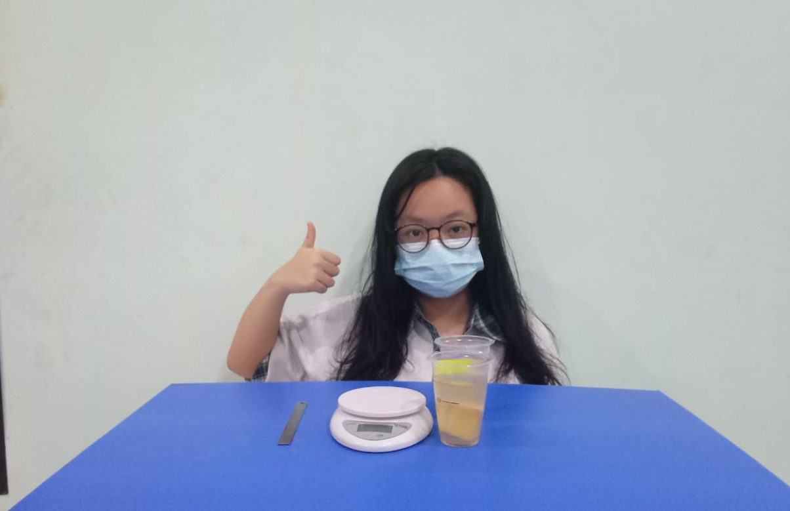
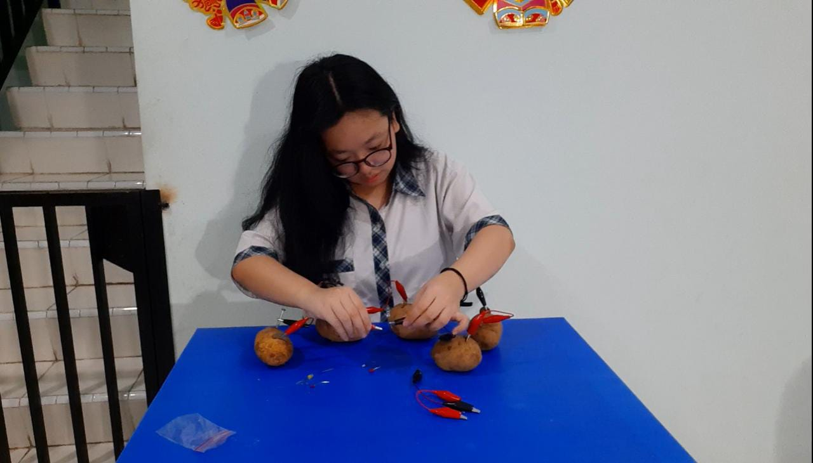
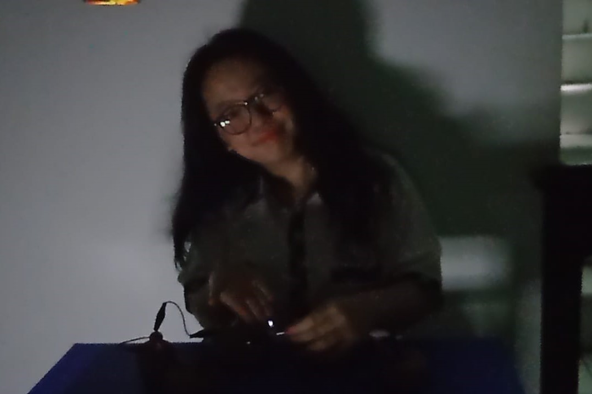
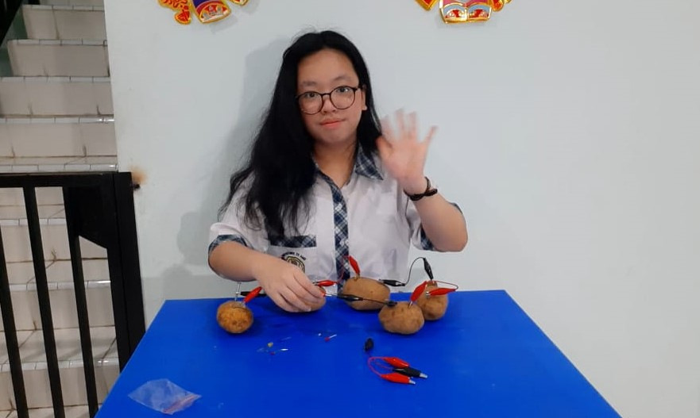

Judul : Energi Alternatif dan Proses Osmosis Pada Kentang
Mata Pelajaran : Fisika, Biologi, Kimia, Matematika, Coding
Hari/Tanggal : Kamis / 10 Februari 2022
Waktu : 08.00 - 12.30 WIB
Tujuan :
1. Mengidentifikasi energi listrik alternatif (Fisika) 2. Melakukan percobaan osmosis pada kentang dengan menggunakan larutan garam dan gula (Biologi) 3. Melakukan ekperimen osmosis pada kentang menggunakan larutan garam dan gula serta menganalisis proses yang terjadi pada peristiwa percobaan osmosis (Kimia) 4. Menyajikan data berupa tabel, grafik cartesius, diagram batang, diagram garis, histogram, atau ogive dan mengambil kesimpulan dari hasil data percobaan osmosis pada kentang menggunakan larutan garam dan gula. (Matematika) 5. Presentasikan hasil-hasil tampilan pada web yang sudah dibuat dengan perintah dalam bahasa pemrograman html dan css menggunakan vsc/notepad.
Alat dan Bahan : 1. Beberapa buah kentang, masing-masing dipotong menjadi dua bagian sama besar.
2. Kabel atau kawat sebagai penghantar arus listrik
3. 1 (satu buah) buah bola lampu LED.
4. Penjepit Buaya.
5. Seng dan logam, atau koin kuning dan putih (sebagai kutub positif dan negatif).
6. Pisau/silet tajam
7. Gula
8. Garam
9. agua cup/Wadah
10. timbangan digital
11. kertas label
12. alat tulis & sendok makan
Langkah-langkah :
PERCOBAAN FISIKA =
1. Siapkan kentang dan lempengan tembaga.
2. Tusukkan lempengan tembaga dan seng ke dalam kentang mentah.
3. Jepitkan kabel kepada lempengan tersebut dan hubungkan dengan lampu.
4. Lihat nyala lampu yang terjadi.
5. Jika nyala lampu belum kelihatan, maka tambah kentang tersebut agar arus listrik yang dihasilkan bertambah.
PERCOBAAN BIOLOGI =
1. Siapkan alat dan bahan
2. Kupas kentang (kentang bentuk persegi Panjang)
3. Cuci kentang sampai bersih
4. Buatlah kentang bentuk persegi dengan sisi masing-masing 4 cm
5. Amati tekstur fisik pada kentang kemudian timbang masing-masing menggunakan timbangan digital
6. Masukan kentang masing masing satu ke dalam wadah berisi larutan gula maupun garam kedalam setiap wadah berisi konsentrasi larutan yang berbeda-beda.
7. Amati tekstur fisik pada kentang setelah didiamkan di dalam larutan gula dan garam selama semalam.
8. Catat hasil pengamatan pada table pengamatan
PERCOBAAN KIMIA =
1. Siapkan alat dan bahan
2. Kupas kentang dan cuci sampai bersih
3. Potonglah kentang berbentuk balok dengan sisi masing-masing 4 cm sebanyak 2 potong (hati-hati saat menggunakan pisau).
4. Amati tekstur fisik pada kentang kemudian timbang masing-masing kentang menggunakan timbangan digital. Catat dalam tabel yang sudah disediakan.
5. Masukkan masing-masing kentang ke dalam wadah berisi larutan gula dan larutan garam.
6. Perhatikan kentang dalam wadah selama 2 x 24 jam.
7. Setelah itu amati tekstur fisik pada kentang kemudian timbang masing-masing kentang menggunakan timbangan digital. Catat dalam tabel yang sudah disediakan.
PERCOBAAN MATEMATIKA =
1. Kumpulkan 4 data larutan gula dan garam dengan konsentrasi yang berbeda dari percobaan teman lain.
2. Buat data dalam tabel tentang perolehan hasil tekanan osmosis yang diperoleh untuk setiap konsetrasi larutan gula dan garam.
3. Sajikan data dalam tabel dalam diagram yang kalian rasa sesuai dengan data yang diperoleh.
PERCOBAAN CODING =
Presentasikan hasil-hasil tampilan pada web yang sudah dibuat dengan perintah dalam bahasa pemrograman html dan css menggunakan vsc/notepad.
FOTO PRAKTIK
 
 
VIDEO PRAKTIK
Pertanyaan & Kesimpulan :
FISIKA 1. Jelaskan mengapa lampu bisa menyala / tidak menyala berdasarkan percobaan dan apa kesimpulan dari percobaan tersebut !
Setelah dilakukan percobaan, lampu LED menyala setelah dihubungkan dengan 3-5 kentang. Pada percobaan 3 sampai 5 kentang, lampu LED menyala, sedangkan pada 1 dan 2 kentang, lampu LED tidak menyala. Hal itu disebabkan oleh kuat arus kentang yang terlalu kecil sehingga tidak cukup untuk menyalakan lampu LED. Nyala lampu yang dihasilkan oleh 5 kentang lebih terang dibanding dengan 3 kentang. Nyala-nya lampu LED dari kentang disebabkan oleh getah kentang yang dapat menghasilkan arus listrik dan juga karena terdapat kandungan garam dan air pada kentang yang dapat berfungsi sebagai larutan elektrolit. Sehingga, semakin banyak kentang yang digunakan, maka akan semakin besar pula nyala lampu yang akan dihasilkan. Dalam percobaan ini dapat disimpulkan bahwa kentang dapat digunakan sebagai energi alternatif.
BIOLOGI 2. Buatlah laporan ilmiah berdasarkan data hasil percobaan praktikum osmosis
Osmosis adalah perpindahan molekul pelarut (air) melalui selaput semipermiabel dari bagian yang lebih encer ke bagian yang lebih pekat atau dari bagian yang konsentrasi pelarut (air) rendah (hipotonis) ke konsentrasi pelarut (air) tinggi (hipertonis). Membran semipermeabel harus dapat dilewati oleh pelarut, tetapi tidak oleh zat terlarut, yang mengakibatkan gradien tekanan sepanjang membran. Berkurangnya berat kentang, ukuran kentang, dan melunaknya kentang pada kedua larutan disebabkan oleh proses osmosis secara hipertonik, dimana tekanan larutan air pada kentang lebih tinggi dibandingkan tekanan pada larutan gula dan garam, sehingga air dari dalam kentang berpindah keluar melalui membran semipermiabel dan menyebabkan berkurangnya berat kentang, ukuran kentang, dan melunaknya kentang.
KIMIA 3. Berdasarkan percobaan jelaskan reaksi kimia pada peristiwa osmosis kentang pada larutan garam dan gula , buatlah laporan ilmiahnya !
Osmosis adalah perpindahan molekul pelarut (air) melalui selaput semipermiabel dari bagian yang lebih encer ke bagian yang lebih pekat atau dari bagian yang konsentrasi pelarut (air) rendah (hipotonis) ke konsentrasi pelarut (air) tinggi (hipertonis). Membran semipermeabel harus dapat dilewati oleh pelarut, tetapi tidak oleh zat terlarut, yang mengakibatkan gradien tekanan sepanjang membran.
Ada 3 jenis tekanan osmotik jika membandingkan tekanan suatu larutan dengan larutan lainnya, yaitu:
Isotonik, larutan yang mempunyai tekanan osmotik sama dengan tekanan osmotik larutan lainnya
Hipertonik, larutan yang mempunyai tekanan osmotik lebih besar dari tekanan osmotik larutan lainnya
Hipotonik, larutan yang mempunyai tekanan osmotik lebih kecil dari tekanan osmotik yang lain.
Dari percobaan diatas, dapat disimpulkan beberapa hal, yaitu :
Berkurangnya berat dan ukuran kentang pada kedua larutan disebabkan oleh proses osmosis secara hipertonik, dimana tekanan larutan air pada kentang lebih tinggi dibandingkan tekanan pada larutan gula dan garam, sehingga air dari dalam kentang berpindah keluar melalui membran semipermiabel dan menyebabkan berkurangnya berat dan ukuran kentang.
Kentang menjadi lunak setelah direndam air gula dan air garam karena tekanan dalam kentang lebih kecil dibandingkan dengan tekanan larutan gula dan larutan garam, sehingga selain berkurangnya berat dan ukuran, kentang juga menjadi lebih lunak dibanding sebelumnya.
Adanya perbedaan berat awal kentang disebabkan oleh tingkat kepadatan dari kentang itu sendiri. Walaupun memiliki ukuran yang sama, namun setiap kentang memiliki tingkat kepadatan yang berbeda-beda, berdasarkan cara penanamannya.
Faktor van't Hoff (i) adalah ukuran efek zat terlarut terhadap sifat koligatif seperti tekanan osmotik, penurunan relatif dalam tekanan uap, kenaikan titik didih dan penurunan titik beku. Pada perhitungan tekanan osmosis larutan gula tidak menggunakan faktor van’t Hoff karena pada larutan non-elektrolit faktor van’t Hoff nya bernilai 1 karena tidak memiliki ion, sehingga tidak diperlukan faktor van’t Hoff dalam perhitungan sifat koligatifnya. Sedangkan para larutan elektrolit (garam), faktor van’t Hoff nya lebih dari 1 sehingga diperlukan perhitungan.
Dari kesimpulan diatas, maka percobaan yang telah dilakukan sesuai dengan teori osmosis dan teori faktor van’t Hoff.
MATEMATIKA 4. Dari data hasil percobaan 4 konsentrasi larutan gula dan garam, Sajikanlah data berupa tabel, grafik cartesius, diagram batang, diagram garis, histogram, atau ogive dan tariklah kesimpulan dari hasil data percobaan tersebut dengan hasil tekanan osmosis yang diperoleh!
Berdasarkan data pada diagram dan tabel diatas, dapat disimpulkan bahwa tekanan osmosis larutan berbanding lurus dengan berat garam dan berat gula. Semakin berat gula dan garam, maka akan semakin besar juga larutan osmosisnya. Tekanan osmosis larutan garam memiliki nilai yang jauh lebih besar dibanding tekanan osmosis gula karena larutan garam bersifat elektrolit sehingga perlu dikalikan dengan faktor van’t Hoff yang menyebabkan nilai tekanan osmosis garam lebih besar.
CODING 5. Dari percobaan peserta didik dapat menuliskan prosedur pelaksanaan dan pengolahan data ke web dengan tampilan pada web mempresentasikan / menyampaikan penjelasan melalui video.